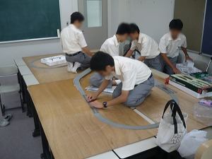

現在の鉄研の原点である文化祭。各年の様子を数枚の写真と文章で振り返ります。
2010年
2010年の文化祭では立体交差を絡めた複雑なNゲージのレイアウトを組み、運転体験も行いました。また、歴代のパンフレットや国鉄時代の時刻表、パスネットなどの展示も実施。部員全員が一人ずつ原稿を書いた部誌も数量限定で配布しました。
前日準備の様子
当日の様子
※写真は
学校作成の文化祭報告ページに掲載されたものです。
2011年
2011年の文化祭では、割り当てられた教室が狭くなったため規模を縮小して実施しました。Nゲージでは全線複線の立体交差を作成（安全性に問題のあった運転体験は中止）。展示では国鉄時代に実際に使われていた車掌の腕章などを追加。新たに発車メロディーの操作体験を行いました。
前日準備の様子
当日の様子
※写真は
学校作成の文化祭報告ページに掲載されたものです。
2012年
2012年の文化祭では工事の関係で歴史研究同好会との相部屋となりましたが、新入生を交えて準備を行い、Nゲージでは複々線に立体交差を組み合わせたレイアウトで4列車同時走行を実施。キーボードを利用し、一人の部員が発車メロディーを演奏し、もう一人の部員がマイクで放送を入れる"ライブ"も行いました。
前日準備の様子

当日の様子
※写真は
学校作成の文化祭報告ページに掲載されたものです。